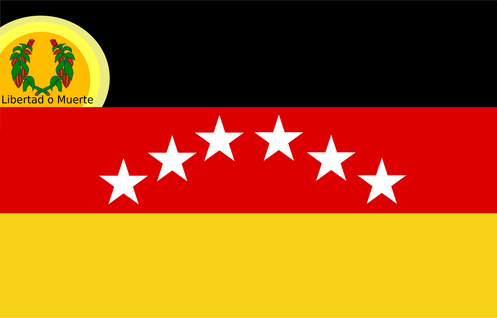

Francisco de Miranda fue un destacado líder militar y político venezolano, considerado uno de los principales precursores de la independencia de Venezuela. Además de su importancia histórica, Miranda también es reconocido por su vínculo con los símbolos patrios que representan la lucha por la libertad.
Francisco de Miranda nació el 28 de marzo de 1750 en Caracas, Venezuela. A lo largo de su vida, Miranda fue un ferviente luchador por la libertad y la independencia de América Latina. Su participación en la Revolución Francesa y su incansable esfuerzo por lograr la independencia de las colonias americanas le valió un lugar destacado en la historia de Venezuela.
La Bandera de Venezuela fue creada por Francisco de Miranda en 1806, y es uno de los símbolos más representativos de la independencia del país. Está compuesta por tres colores: amarillo, azul y rojo. El amarillo simboliza la riqueza del país, el azul la lucha por la independencia y el rojo la sangre derramada por la libertad.
El Himno Nacional de Venezuela, llamado "Gloria al Bravo Pueblo", fue compuesto por el músico José Antonio Chaves. Es un símbolo que representa la unidad y la lucha por la libertad de la nación.
El Escudo de Armas de Venezuela simboliza la unión y el esfuerzo por la independencia. En su diseño, se destacan elementos como las montañas, el caballo, la riqueza agrícola y el olivo como símbolo de paz.